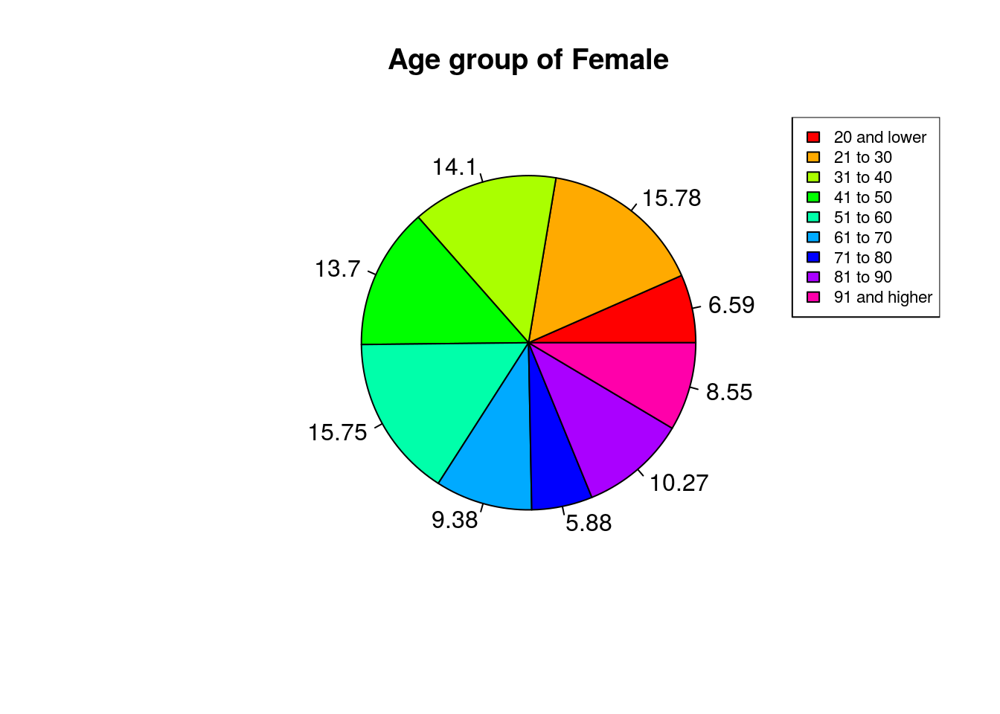

Part I. Abstraction
A new virus called COVID-19 is sweeping through countries around the world in 2020. It has high infectivity and high concealment, at the same time severely infected people can cause serious impact on the body and even death. Here, I’d like to start a series of investigations into this virus.
Part II. Introduction
I exact the data of all collected COVID-19 cases in city Toronto through the website of “Toronto Open Data Portal”. Then I will analysis the characteristic of this virus using statistical experiment method such as classification, sorting out the feature and plotting. The goal is to find out which group people is more likely to get infected and giving a best solution to prevent from it.
Part III. Data Introduction
The data we use today is collected since the first case has reported at January 2020, and all data is managed by Toronto Public Health. It has many different category such as age, gender, degree of infection etc. However, this data set might be differ from other as cases are extracted from different time and different sources.
Part IV. Plots
The first category I want to discover is called “Client Gender” and “Age Group”. I want to know for different age group of male and female would have a vary degree of immunity for this virus. By doing this, I first classify the category of male and female, then under different gender, I use bar chart to analysis several groups of ages.
Covid19cases <- data
gender <- Covid19cases$`Client Gender`
data_male <- filter(Covid19cases, gender=='MALE')
x <- as.numeric(table(data_male$`Age Group`))
piepercent<- paste(round(100*x/sum(x),2))
pie(x, labels = piepercent, main = "Age group of Male", col = rainbow(length(x)))
legend("topright", c('20 and lower', '21 to 30', '31 to 40', '41 to 50', '51 to 60', '61 to 70', '71 to 80', '81 to 90', '91 and higher' ), fill = rainbow(length(x)), cex = 0.7)gender <- Covid19cases$`Client Gender`
data_male <- filter(data, gender=='FEMALE')
x <- as.numeric(table(data_male$`Age Group`))
piepercent<- paste(round(100*x/sum(x),2))
pie(x, labels = piepercent, main = "Age group of Female", col = rainbow(length(x)))
legend("topright", c('20 and lower', '21 to 30', '31 to 40', '41 to 50', '51 to 60', '61 to 70', '71 to 80', '81 to 90', '91 and higher' ), fill = rainbow(length(x)), cex = 0.7)
Part V. Analysis and Conclusion
By looking at both graphs, it shows that for both male and female, people between the age of 21 to 30 years old have the largest percentage among the others. However, for the age of 91 and higher, there are more female getting infected than the same age of male. Another large percentage of cases for male is the age between 31 to 40. While for the female, the second largest group is age of 51 to 60. By comparing this, I can conclude that the average age of cases for female is older than the age of cases for male. On the other side, for both male and female cases, most infected people are in prime of life, they are the main part of labor force. So in order to prevent the spread of COVID-19, the government made the quick decision to shut down the workplaces. What’s more can be done is to encourage people to wear masks when going outside, also maintain a safe distance of 2 meters apart from each other.